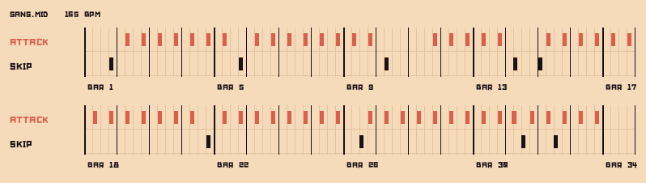

SpaceRim
- Made for
- Castle Game Jam, October 2023, 48 hours, theme "Klaatu barada nikto"
- Genre
- Rhythm game with RPG boss battles, played by typing spells
- Engine
- Godot 4.1, with levels written as MIDI tracks
- My part
- Game designer, pixel artist and UI artist: I drew the bosses and wrote their spells
- Team
- LIMPERO Studios: Malakh17, Zahkros, Smoketracy, Elia Scaravelli and me
Klaatu barada nikto
The jam's theme was a phrase: "Klaatu barada nikto", the words that stop the robot Gort in The Day the Earth Stood Still (1951). A theme that is literally a spell, so we made a game about reciting spells.
We wanted something we could do properly in 48 hours. SpaceRim is a rhythm game with a bit of RPG in it: you face a boss, and the only weapon you have is your keyboard. The name is a team pun: Space, plus Skyrim.

Spells, letter by letter
Every spell is a word, spread across the beats of the song. Say the spell is TOBY: each time an attack beat arrives, you type the next letter in time, T, then O, then B. Every correct letter deals damage, and a streak of them builds a multiplier up to double. Finishing the word completes the spell.
Four kinds of beat run along the track:
- Attack, the sword: type the right letter on time and it hits the boss. The wrong key stuns you instead.
- Stun cancels your damage: the next attack beats go dark and hit nothing.
- Skip is a fakeout. It sits right on the tempo of the song to tempt you, and pressing it costs you a life.
- Defend: hit the spacebar to shield yourself from the boss's attack. Miss it and the boss tears a letter off your spell, or takes a life if the spell is still empty.
The level is the score
SpaceRim has no chart editor. My level editor was a MIDI file: one track for attacks, one for skips, one for defends, laid on top of the song. The game plays the file twice. One copy runs ahead and spawns the markers on the track; the other runs on time and decides whether each key press landed.

Learning to read in time
In testing, typing on the beat felt counterintuitive at first. Then players got used to it and started building real skill: reading the word ahead, typing it in time.
We were short on time, so there was no real polishing round, but two changes made a big difference:
- A breath at the start. The song opens with the word on screen before the first beat, so players get mentally ready and reach a state of flow sooner.
- The word moved down. We put the letters in the lower part of the screen, between the beat track and the keyboard. Your eyes travel between those two all the time, and the word sits on the way, so you read it by reflex.
The tutorial level watches you, too: if you make too many mistakes in the first seconds, a helper starts flashing to show you what to press.
The bosses
The whole theme was very meme, and so are the bosses: Sans in a Supreme drip jacket, Keanu Reeves as Johnny Silverhand, and Jabba the Hutt pondering the orb. I drew them, and I picked their spells, so every word belongs to its boss. Sans makes you type DRIP, TOBY and SUPREME. Jabba's last spell is the theme itself: KLAATU BARADA NIKTO.